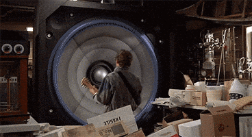
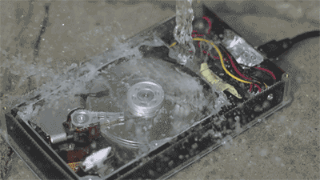

.
Hi :) I am Christopher Hamfield- a noob level dev & a creative person.
Presently, my legal name differs from my real name for now due to a mistake, however I will immediatly fix it once I can afford to.
.
I'm fluent in both English and Russian.
.
Когда я перехожу на Русский, можеш называть меня Крысой.
!!! Крис ---> Крыса, да я вот такой alpha mail мужчина ваще ван хандерд%% сигма ризз, йес гайс.
I refuse to use cloud services for most of my personal data, which is typically stored locally on my computer(s).

Though I don't mind using cloud services for educational/professional reasons. And there are small exceptions such as the videos section of this website using Google Drive, but as I don't mind giving Google access to uploaded YouTube videos, why would I care about them scraping through ones on the Google Drive?
.
I gotta say I love long walks, I walked from where I live to another town which takes 3 hours, and then back all by myself. (Many times, more than 1 LOL)

.

Most of the time, I don't tend to take myself seriously, yet sometimes I do. It's probably an age thing.
I've got a personal Music Project called The Crawlhatch, I've produced a few songs, though for the time being I have paused any further development (More information here)
Whatever dudes, I simply exist and do things, the judgement of those things is up to you.
.
.
Get to know me in person if you really want to rather than relying solely on what is written online.
See y'all laterz, bye ;D
.
Thank you! Click the button(s) below for further information.:
© 2024-2026 Hamfield518- All rights reserved, lefts preserved.